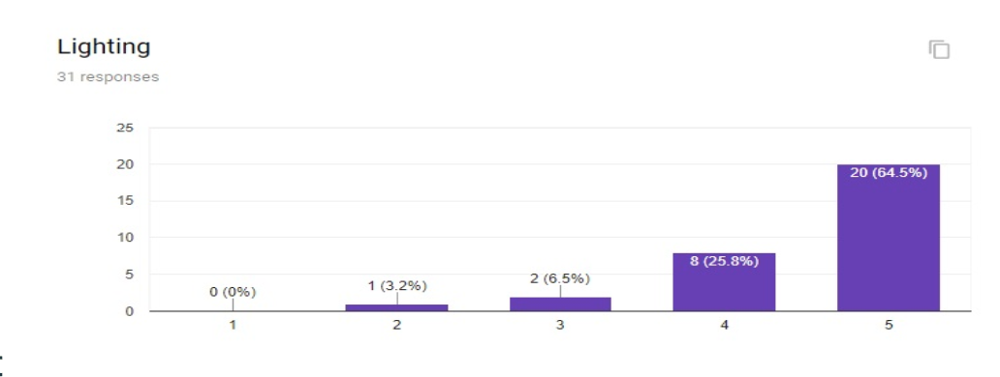
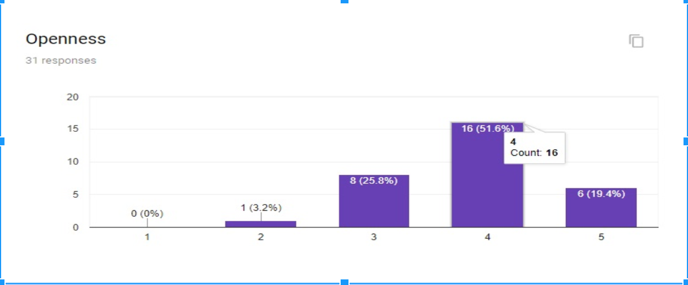
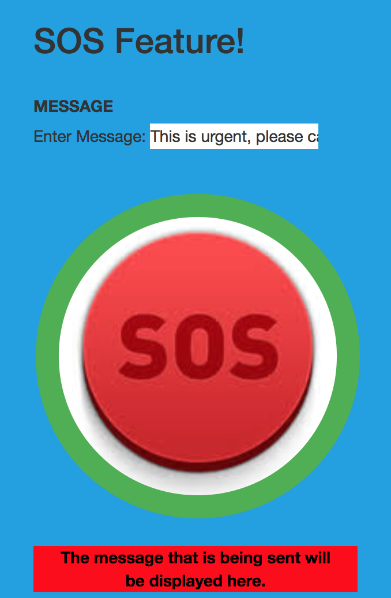

Social Entrepreneurship
Introduction UP
The aim of the final project in this course was to identify a social issue and attempt to create something that would go some way towards improving the situation either by finding a solution or by raising awareness regarding this cause in some form or the other. As a group we decided to pick a field in which our project could make some sort of difference considering the time constraints (The course is only three months long). Our second criteria was to pick a project which would reflect our strengths, as this would allow us to create something which had the potential for the greatest impact. All 3 of us have a background in Computer Science and felt that we could use these skills and attempt to create a useful web application which could solve any of the array of social issues around us. We brainstormed ideas and finally managed to narrow down to the field of women’s safety, which we feel is easily one of the most pertinent issues in our country today. It seemed to be the ideal opportunity for us to gain some in depth knowledge regarding the issues faced by women on a daily basis and to try our level best to help them in any manner we could.
Interviews UP
Our next step was to contact NGOs who actively worked in the field of women’s issues, including their safety. We got in touch with 2 NGO’s - Swati and Jagori - to get an idea of what the challenges in the field were and received advice as to how we should set about our task. They told us about the severe lack of information regarding safety levels of different areas and explained how this left women feeling vulnerable especially while travelling on their own to unfamiliar areas. These interviews gave us an insight into the unique challenges in the field as well as what was lacking in terms of the current solutions. They gave us a foundation upon which we could build begin to build an app that could answer these problems. After this round of interviews, we did some research to find whether there were any companies who had succeeded in implementing anything along similar lines. We came across a company called Safetipin which is a highly successful women’s safety app and decided to get in touch with them. After multiple attempts, we were able to get hold of a senior representative of Safetipin to understand how they approached the challenges in the field. They explained to us how they undertook extensive amounts of qualitative research to come up with a list of metrics, a weighted average of which would give a safety score. These metrics include factors such as visibility, crowdedness, lighting etc. We told them about our project and they were enthusiastic to help us and happy that students were showing interest in their work. They decided to help us out by providing us with access to their Delhi area-wise data of different metrics and requested us to present our project to them once it was complete.
Surveys UP
 To meaningfully use the raw data they had provided us with, we had to arrive at an algorithm which would give us the safety score consisting of a weighted average of all the metrics. For the purpose of beginning work on our app, we decided to run a small informal survey with the women at Ashoka, discussing the importance of the different metrics in the list. As the project progressed however, we sent out a larger formal survey and received over 80 responses. These responses were then compiled, processed and the metrics were given a weightage rank between 1-5 in order of importance. This weightage rank was then applied to our algorithm and we managed to extract area wise safety scores from the raw data.
Our Application UP
Once we had raw data and managed to process it to extract safety scores, we were able to begin proper work on our application. For the purpose of this course we decided to make a web application which would include 2 primary features:
- A Data Visualisation of a map of Delhi which contains an area wise breakdown of safety scores as well as scores of each area according to particular metrics.
- An SOS feature
Data Visualisation
Write up on Data Viz along with the data viz. We have done multiple Visualisation:
- Visualisation 1: Mapbox
- Visualisation 2: Tableau
*Please contact owner if you cannot view the Mapbox visualisation above this.

*If you can't see the visualisations it is probably because you are connected to Ashoka University Wifi. Currently Tableau Visualisations can be viewed only using Mobile data or other connections.
SOS Feature
Directions of use: Click on link (preferable on mobile device), enter application, rest should be intuitive. While we reached out to various individuals regarding our project we felt that there was a lack of a basic yet essential feature that is easily accessible. From our interviews we guaged the necessity of a web application which has an SOS feature that can be assigned to send messages to preset emergency contacts. Our application was built after interviewing possible users in our college. The design decisions (colours, shapes, sizes) of every item was curated to suit the user. It provides multiple functions:
- Swipe left to send a preset message to certain contacts.
- Press on SOS button to alert emergency contacts with your custom message.
Conclusion & Future Prospects UP
We set out to create an application which had the potential to make an actual change to the field of women’s safety in India and I think we made significant progress over a short period of time. The application is unique in the sense that it combines two extremely crucial features in one place and if taken forward in the appropriate manner, the idea has the potential to grow even further. After the semester ends, we have a meeting with Safetipin and they seem enthused by the idea of adding an SOS feature to their safety score application. If this goes through, then there might be an opportunity for us to collaborate with them further in the future and hopefully build on, and expand our idea even more, allowing us to have a real impact on the long-term state of women’s safety in India.